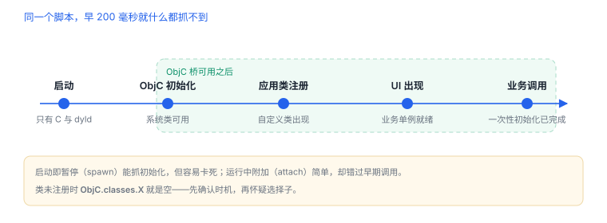

脚本时机与 ObjC 桥
同一个脚本，早 200 毫秒就什么都抓不到
脚本能不能工作，八成取决于时机。类还没注册时，方法表是空的；等你连上去，初始化早已跑完。所以要先把“什么时候有什么”弄清楚，再谈 hook 谁。
1. 三个时间点
| 时间点 | 已可用 | 还不可用 |
|---|---|---|
| 进程刚启动 | C 函数、dyld 符号 | Objective-C 类、应用自定义对象 |
| ObjC 运行时初始化后 | ObjC.classes、系统类 | 应用自己的类（可能尚未注册） |
| 界面与业务初始化后 | 应用类、单例、网络栈 | 已经发生过的一次性初始化 |
“脚本没反应”最常见的原因不是写错，而是执行在类注册之前。
2. ObjC 桥的入口
| 接口 | 用途 |
|---|---|
ObjC.available | 运行时是否就绪 |
ObjC.classes | 按类名索引已注册的类 |
ObjC.protocols | 协议列表 |
cls['- method:'] | 取实例方法；类方法用 '+ method' |
method.implementation | 拿到函数地址，供 Interceptor.attach 使用 |

3. 参数从哪来
Objective-C 方法最终以 (self, _cmd, 参数…) 调用，因此在前两个位置之外，业务参数从 args[2] 开始：
挂在自有类的方法上，读取参数与返回值
if (ObjC.available) {
const cls = ObjC.classes.LoginService;
const method = cls && cls['- requestToken:'];
if (method) {
Interceptor.attach(method.implementation, {
onEnter(args) {
this.account = new ObjC.Object(args[2]).toString(); // 第一个业务参数
console.log('account =', this.account);
},
onLeave(retval) {
console.log('token len =', new ObjC.Object(retval).toString().length);
}
});
}
}类型不对时会得到 undefined 或直接崩溃：对象参数用 new ObjC.Object() 包装，C 字符串用 args[2].readUtf8String()，整数直接取数值。
4. 时机怎么补
| 手段 | 做法 | 适用 |
|---|---|---|
| 延迟重试 | 轮询类是否已注册，注册后再挂 | 快速验证 |
| spawn 暂停 | 从进程启动前接管，早期就加载脚本 | 抓初始化调用 |
| 挂在已知早期入口 | 先 hook 一个确定会早执行的 C 函数 | 定位启动顺序 |
等到类出现再挂
const timer = setInterval(() => {
if (ObjC.classes.LoginService) {
clearInterval(timer);
attachLogin();
}
}, 200);5. 失败分流
| 现象 | 原因 | 查哪里 |
|---|---|---|
ObjC 未定义 | 脚本在运行时初始化前执行 | 延后或改用 spawn |
ObjC.classes.X 为空 | 类未注册或名字拼错 | 列出类名核对；注意 Swift 类名带模块前缀 |
| 方法取不到 | 选择子写错，或方法未暴露给 Objective-C | 枚举方法列表 |
参数是 undefined | 索引错位或类型不匹配 | 打印 method.argumentTypes |
| 挂上就崩溃 | 在错误时机读取了已释放对象 | 缩短回调逻辑，减少对象包装 |
时机决定可见性
类未注册时
类未注册时
ObjC.classes.X 就是空；先确认时机，再怀疑选择子拼写。6. 工程权衡：spawn 还是 attach
| 方式 | 能抓到 | 代价 |
|---|---|---|
| 启动即暂停（spawn） | 初始化、单例构造、首屏请求 | 要接管启动流程，卡死会拖垮应用 |
| 运行中附加（attach） | 交互后的业务路径 | 错过一次性初始化 |
| 脚本内延迟 | 界面出现后的调用 | 时机靠猜，可能已错过 |
判断标准：要抓的东西是否“只发生一次且发生在启动期”。是，就用 spawn；否，attach 足够。
7. 自测
- 为什么
ObjC.available为真时，应用自己的类仍可能不存在？ - Objective-C 方法的第一个业务参数为什么在
args[2]？ - “轮询等待类注册”与“spawn 暂停”各适合什么场景？
- 参数类型读错为什么会直接崩溃？